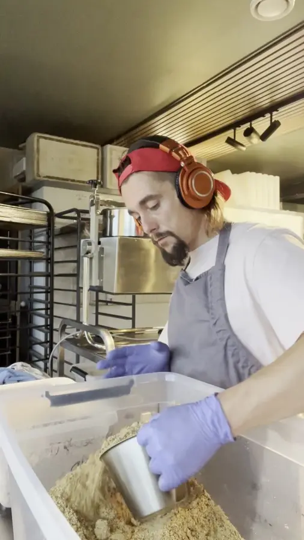

Est. 2025
Lego
Ľubomír Krestián
- Ingredienser
- Designer, poet, trommeslager, far, 23 timer uten søvn.
- Funksjon
- Merkevare, nettside og nattskift ved melangeren.
- Kan inneholde spor av
- Ironi.
- Oppbevaring
- Tåler mørke. Best med trommer.
Best før: aldri
